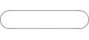
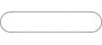

|
 |
 

| The Week In Warez (1995)
WWN is the predecessor to Inquisition which had it's start in July 1995 after the editors believed there was a need for a scene based newsletter to be released on a weekly basis. It was supported by some big name scene members including Lester, Bishop, Cyber Angel, Mikeysoft, Jimmy Jamez. WWN is definitely worth a look at as it established a format of presentation that all the other magazines in the future would follow including the biggest of them all RCN. If you check issue four of WWN you will discover Ionizer's first Game Review article which would eventually lead him on the creating the famous The Game Review publication.
|